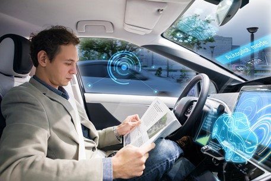

Figure 1, How does a transaction get into the blockchain, Euromoney Learning, 2020, png
One of the biggest differences between blockchain databases and normal databases is the way of structuring data into blocks instead of tables. This data structure creates a timeline of data that is irreversible, permanent, and transparent. (Hayes, A, 2022)
As blockchain technology is permanent and irreversible, it has become the foundation of ledgers used by cryptocurrencies to record transactions between two parties efficiently, and in a verifiable way. Due to the transparency of the blockchain, along with the ledger being stored across a vast number of nodes through the use of peer-to-peer networking, cryptocurrency has become a safe and cheap alternative for transactions world wide. (Iansiti & Lakhani, 2017)
Most people think of cryptocurrency when blockchain is mentioned, and that’s understandable, with almost 10,000 cryptocurrencies running on blockchain. (Fusion Media Ltd, 2022) Blockchain technology is extremely versatile and is not bound by storing monetary transactions. Multiple companies across the globe have incorporated blockchain technology into their businesses, from Walmart to Pfizer, to IBM
. (Hayes, A, 2022) A perfect example of this is IBM created a Food Trust blockchain which traces the journey of their food products to their final destination. This gives IBM the ability to trace the products entire journey back to its origin if a potential contamination has occured, allowing for the cause of the contamination to be found much quicker and more reliably then if the company had to go through the records manually. (IBM, n.d.)
Cryptocurrency has been growing in popularity over the last few years due to an increase in media coverage, the idea of the currency not being regulated by government bodies, and a perception that people will be missing out on the next big thing. Although there has been a large influx of people entering the cryptocurrency space, some do not understand what they are getting involved in. Cryptocurrency is a decentralised digital token that is based on blockchain technology. Many people are familiar with the popular tokens such as bitcoin, ethereum, xrp, and dogecoin, but do not understand the use behind the tokens.
Tokens such as dogecoin were originally created as a joke to make fun of cryptocurrencies at the time, whereas tokens such as xrp, bitcoin and ethereum were created with a purpose in mind.(Frankenfield. J, 2021) was created by the US-based company Ripple Labs Inc, which allows financial institutions to transfer money with greatly reduced fees and wait times. There are many different tokens in the cryptocurrency space with a multitude of uses.
Ripple, unlike other cryptocurrencies, does not use blockchain technology, but instead uses a “hash tree”, also known as a “Merkle Tree”. This system is similar to the blockchains used by other cryptocurrencies, although instead of using a proof of work system similar to Bitcoin, it uses a consensus based model. Due to this difference, the Ripple network is able to process a much larger number of transactions per second. So far Ripple has managed to sign up over 100 banks to use their infrastructure. (Ahmad. N, 2021)

Blockchain technology has the ability to be utilised across all industries with multiple applications. These applications could be used in securing patient informatio n across the healthcare industry, providing smart contracts between tenants and landlords, and becoming more widely implemented across different supply chains. (Reiff. N, 26 July 2021) As this technology is only just beginning to be implemented across a range of industries, I believe that the extent this technology can be utilised is still unclear.
What is the Likely Impact
Blockchain technology and cryptocurrency are going to have a large impact across multiple industries in the future. As development of blockchain technology continues, we are likely to see drastic changes to how companies store and monitor their data. With the implementation of these changes, we are likely to see a much greater need for IT jobs that have specialties analysing, building, and troubleshooting these databases.
Due to the nature of blockchain, this could potentially put a strain on companies who wish to utilise this technology but are unable to acquire competent staff, do not have staff with an understanding of the technology, or are unable to move to the new technology due to financial reasons. Along with the need for competent staff, we could see a range of redundancies due to the nature of the blockchain. There is a larger potential for these systems to become automated in the future, reducing the manpower required to run them compared to older database systems.
Cryptocurrency could see a very different impact to blockchain technology, as these can be used as investments and assets for both individuals and companies. Due to the highly volatile nature of cryptocurrency along with increased media attention, people may invest in crypto currency with the belief that they could make large amounts of money quickly. This can become problematic as it can create huge levels of stress amongst people due to its high volatility, and people may end up losing vast sums of money in the process if they invest without sufficient knowledge and strategy.
Although cryptocurrency has its cons, it also has its pros. With the large difference in fees and speeds of payments between parties, especially cross-border payments, cryptocurrency has the opportunity to drastically change the financial sector. Stable coins will have a large part in this, as they are tied to a fiat currency and can be easily changed back into a fiat currency of choice.
One of the largest downsides to cryptocurrency is how it is being used by criminal organisations to launder money. As there does not need to be any form of meeting before transferring cryptocurrency between wallets, and there is no mediator or middle-man, criminal organisations are able to deliver illicit services and receive payment much easier than in the past. This has become problematic for many countries, as it has become more difficult to track payments. (Vereckey. B, 14 October 2021)
How will this Affect you
Due to the way that blockchain technology is currently being implemented, the effects may go unnoticed by many. People may notice that recalls are announced much sooner, or they may hear less news in regards to data breaches in large companies. Overall I believe that many changes created from the use of blockchain technology will go unnoticed by those who are not involved in work that have implemented this technology into their systems.
As time moves forward and blockchain technology is further developed and implemented across a greater range of industries, I believe we will see a greater effect across our daily lives. We could see approval of loans and contracts being reduced considerably due to smart contracts being used between parties, along with the fees associated becoming almost unnoticeable. Purchases made using credit may be able to drastically reduce the time that payment is received by vendors, which could help create a more consistent cash-flow. Only time will be able to show us the true extent of how blockchain technology will affect us.
Cryptocurrency on the other hand is having a large effect on people’s lives now due to the increase in media attention and the perception that they will potentially miss out. A large number of people have signed up to exchanges recently and begun using cryptocurrency for a variety of things.
 Figure 3, Adoption of Cryptocurrency, Bianco Research LLC, n.d., png
Figure 3, Adoption of Cryptocurrency, Bianco Research LLC, n.d., png
Although cryptocurrency is widely viewed as just being a form of asset that can be bought and sold over exchanges for fiat currency or other tokens, there are other ways that these tokens can be used or gathered.
A perfect example of this is the Helium(HNT) token. This token is earned through mining in an unconventional way. The mining method for Helium is by setting up a device that creates an internet hotspot that provides a decentralised connection for the Internet of Things. (Helium, n.d.)
Through further development and implementation of this technology, we could see a drastic change in the telecommunications sector, creating a much wider range of internet connectivity and a reduced cost, along with increased security due to the end-to-end encryption provided by the network.
My conclusion is that although we are only just seeing the beginning of blockchain technology and the cryptocurrencies associated, I believe that this technology has the potential to completely reshape some industries as we know them.
Raspberry Pis, Arduinos and Makey Makeys
What Does it Do
Raspberry Pis are simply small, credit card sized computers that were created by the Uk based charity, Raspberry Pi Foundation. This project was originally created with the intention of giving people of all ages the ability to explore and learn more about computing. (Raspberry Pi Foundation, n.d)
These single-board computers are capable of doing the same things as a normal PC. On top of this, Raspberry Pi’s are modular and have the ability to interact with the outside world. Due to these things, Raspberry Pi’s have been used in a variety of different projects such as weather monitoring devices, automated control of various things throughout the house, motion capture security systems, and even controlling a homemade robot. (Cawley. C, 2019)
Arduino is an open-source electronics company that manufactures easy to use developmental hardware that is able to be modified by the owner. These Arduino boards are able to be programmed to read an input, such as the pressing of a button, and then produce a particular output. The output produced comes from the microcontroller onboard, and is created through sending a set of instructions to the board. These instructions are generally created using the Arduino programming language, which is based on the programming framework known as Wiring. (Arduino, 2018)Arduino boards use a variety of microprocessors and controllers that allow the board to be connected to other components or expansion boards. This allows the Arduino boards to be used alongside Raspberry Pi’s and other components to create a range of different projects. These projects have included air quality monitoring across a city using a LoRa Gateway, autonomous following eski’s, robotics, and contactless hand sanitising stations. (Arduino, 2018)
Due to the ease of use of Arduino boards they are perfect for all ages to start creating their own IT projects. Due to the modular nature of Arduino boards, once you become more confident in your abilities in both the software and hardware, you are able to continue expanding on your project, or even create more complex projects, without the need to learn a new software or change to different hardware. It's also possible to purchase kits which can take a lot of guesswork out of the project when you're starting out, and guide you through the entire process. These can be great for kids as they come in a variety of difficulties and sizes. (Arduino, 2018)
The basic Makey Makey kit contains a usb cable, a bespoke circuit board along with alligator clips which can be hooked onto anything that is able to conduct electricity. This allows an endless variety of things to be used to interact with a computer from bananas, people and even fluid.
The Makey Makey kits have a great potential for education due to their simplistic design and ease of use. There are reports of four year olds being able to plug in the kit and connect the clips to various objects with little help. This is a great way to introduce children to the concepts of science and technology, and allows them to explore endless possibilities. (Kottoor, N, 2012)
Makey Makey runs on top of an arduino which allows you to use the board in ‘Arduino’ mode. This can allow further configuration as the Arduino allows you to interact with a greater array of objects, such as turning on LEDs or spinning motors. (Sliver, J, 2019)
All of these devices are focused on education and discovery, providing an easy way to introduce a younger audience to explore science and IT in a creative way.
What is the Likely Impact
All of these products were originally conceived with the idea of education behind them. As they become more readily accessible, this could have a huge impact on how people, both young and old, are taught about electronics, science and IT.
In the future, Makey Makeys could be introduced into primary schools or High schools to create fun, practical avenues of learning for children. As Makey Makeys don’t require expensive hardware to run and are easy to use, this makes them the perfect tool for teachers to introduce the concepts of science and IT to their students.
During later schooling years, Arduinos and Raspberry Pis could be incorporated into science, electronics, and information technology subjects. Through implementing Raspberry Pis, students involved could learn and improve their programming skills through real world application. Arduinos could be used in science subjects to explore and learn about physics, while also learning about the concepts of electromagnetism and thermodynamics through the use of various sensors. (Arduino, n.d.)
As time goes on these products are likely to become even more compact and powerful, allowing new ideas and projects to become viable. It is possible to see Arduinos being able to connect to a greater quantity of sensors, or more advanced sensors, which could see a greater application across the scientific community for more advanced data collection.
Raspberry Pis are generally used by hobbyists to create a variety of projects, but these projects can lead to further development of the technology into much larger applications. For example, a Raspberry Pi hobbyist, Kutluhan Aktar, created a fruit and vegetable ripeness meter based on the coloration of the fruit or vegetable. (Aktar. K, 2021)
This project, if developed further, could have a huge impact on the agricultural sector, reducing the time farmers spend checking and sorting through crops.
How will this Affect You
Although at the present time Raspberry Pis, Arduinos and Makey Makeys do not affect me, I believe that this will change in the future. Since becoming a father, I have learnt the joys of teaching my son new and wonderful things, and I believe that in the future both of us would enjoy what these products have to offer.
Once he has become older, I would love to use these products to introduce him to electronics. From a young age I would be able to utilise the Makey Makey to educate him around the concepts of conductivity and grounding, whilst having fun at the same time. This would also allow for precious bonding time as I am usually out of the house due to work.
If he showed keen interest in the Makey Makey and the principles behind it, then I could expand into Raspberry Pis and Arduinos. The whole family can become involved in creating new and exciting things, all the while learning some basic principles of electronics. Raspberry Pis and Arduinos can also be implemented into cryptocurrency, which has been a passion of mine for some time. Although I have not used Raspberry Pis or Arduinos before, it does spark my interest in the field of Cryptocurrency.
It is possible to implement these into different projects that could make things such as watching coins and wallets, and storing coins much easier, with the added bonus of creating a new project. I could create trackers to watch particular coins and wallets which would make it easier to view specific coins without needing to have multiple applications on my phone. It is also possible to create a cold wallet(offline), which would add an extra level of security on my assets. (Long, M, 2021)
Cybersecurity
What does it do?
The same way we use locks and certain measures to protect our home or car, we should be using cyber security to protect our computers and networks. Like the name suggests cyber security refers to the protection of internet connected systems from cyber criminals. This practice involves protecting hardware, software, and data. Individuals and enterprises use this practice to protect data centers and other computerized systems from potential unauthorized breaches. Attacks known as cyber-attacks are made to exploit vulnerabilities in an enterprise systems or individual's device in order to disable, disrupt, destroy, or control their infrastructure or data.
Figure 1, Stealing user information,By Mohammad. H, 2021. Image
Good cyber security involves several layers of protection across devices, programs, networks data, and systems of an enterprise. Combinations of updated Technologies and good practices can supply effective defense against the continuous growing threats of cyber space. Cyber Security can be broken up into several working parts which mainly include:
- Application security
- Cloud security
- Critical infrastructure security
- Network security
- Internet of things or (IoT) security
The coordination of these parts within an organization is essential for the success of a cyber security system. Criminals are evolving just like technology does, maintaining cyber security in a constant evolving environment is a challenge for all organizations and individuals. These types of threats include:
- Malware
- Code injections
- Ransomware
- Phishing
- DDoS (Distributed denial of service) and many more.
As new measures are put in place to prevent such attacks hackers simultaneously find new avenues to exploit newfound weaknesses. In the future it is safe to say most things will be automated. We can see with cars for example as mentioned in the Autonomous vehicles section. Similarly, AI is, and will be, used in cyber security for its own respective purposes to provide defense against cyber-attacks.
AI is an ever-evolving technology field in IT and has several use cases, it is immensely powerful when applied to cyber security. Just like financial services use AI for fraud detection, similarly AI can be used to counteract cybercrime in many ways, for example AI powered cyber security can analyze and review terabytes of data daily to detect hacking attempts, malware, data exfiltration, and evidence of a successful or ongoing attack. (John. F.K, 2021)
In the past Most organizations would be protected if they frequently kept their security Sofware signatures updated. This is no longer the case due to new and ongoing developments in cybercrime. For example, Advanced malware can modify itself and hacker toolkits allow bad actors to create novel malware daily or even hourly. New viruses and exploits usually attack data centers before the security company is able to distribute updated signatures. These have not been seen before so will not be present in any threat databases. AI driven security is able to detect these threats by identifying suspicious behavior instead of only scanning for known signatures. AI can be made to recognize suspicious traffic patterns or application behaviors to detect new attacks. This is able to be done even if the specific attacks have not been seen before which makes it such a powerful tool in cybersecurity.(John. F.K, 2021)
These are only some of the thing's AI can do right now in cyber security. As AI develops and hackers evolve to find ways it is inevitable that AI will advance increasingly in the future. As said by (Oliver. S, CISCO, MediaMarktSaturn Retail Group) “AI offers huge opportunities in cyber security, it allows us to move from detection, manual reaction and remediation towards an automated remediation, which organizations would like to achieve in the next three to five years.” (“Artificial Intelligence an Emerging Catalyst for Cyber ...”)
Industrial (IIoT) market is predicted to reach $123B in 2021. Accenture forecasts IIoT can add as much as staggering $14.2T to the gobal economy by 2030 again signifying the importance for simultaneous development of cyber security systems to defend against future attacks.
The growth in technologies such as Internet of Things (IoT), artificial intelligence (AI), robots, clouds and sensors are essential to be used by manufacturers to improve productivity, efficiencies and the autonomous operation of production lines. As AI and automation develop more business are seeing the advantages of implementing them in their cyber security systems. Not only is it more effective in providing defense but automation also saves massive amounts of money for organizations. Businesses are investing billions of dollars into AI and automation. The Industrial IoT alone is set to become a $500 billion dollar market by 2025. (Steve. D, 2021)
As factories and supply chains connect the production line to the outside world via IIoT, digitally connected industries become an increasingly attractive target to cyber criminals who now have the chance to infiltrate and hijack high value targets. Imagining having to monitor security alerts for millions of connected devices globally. IIoT devices have extremely limited computing power and therefore lack the ability to run security solutions. This is where AI and machine learning (ML) come in. ML can help make up for the lack of security teams. AI helps discover devices and hidden patterns while processing large chunks of data. ML can help monitor any deviations related to behavior in the IoT ecosystem. If an anomaly or threat is detected, alarms can be sent to admins with a warning about suspicious traffic. ML and AI can also be used to create lightweight endpoint detection technologies. This is a potentially vital solution. Particularly in situations where IoT devices lack processing power and need behavior-based detection capabilities that are not as resource intensive. (Steve. D, 2021)
AI has strong predictive powers which is what makes it so useful in cyber security. Used with automation it is bound to be much stronger and applicable across many industries. As cyber criminals adapt to new security measures using things like machine learning to evade cyber security only makes the need for AI increasingly relevant as it’s the only thing that can counter AI powered attacks.
What is the likely impact?
AI can customize phishing attacks to make voices seem much more realistic. AI also has a broad range of uses in attacks, Botnets use simple AI concepts to seek out venerable machines and find ways to work around cyber defenses. Domain generation algorithms can automatically manufacture new URL’s that can spread malware without being blacklisted by DNS based security gateways. These are all examples of basic AI being used in cyber-attacks. As methods evolve more sophisticated machine learning and natural language processing models will be used in attacks in the future this means that individuals and organizations must keep upskilled and updated with the latest security systems to keep themselves safe.
Increased hackers in the future will be using AI as mentioned in the “what does it do” section above. This means AI will be immensely developed to counteract and prevent such attacks from happening. The impact of an attack can vary, Hackers can gain access to personal data, card details or even erase an entire system by injecting malware into an organizations code base.
As AI evolves organizations are seeing the vital need for it, in a recent report from the Capgemini Research Institute, 850 senior executives were surveyed from IT information security, IT operations and cyber security in multiple sectors across 10 different countries, 20 use cases of AI in cyber security were analyzed across IT, OT, and IoT, it was found that
- Firms are finding it increasingly vital to strengthen cyber security with AI, an estimated two thirds believe they cannot find critical threats without AI.
- The rate of adoption of Ai in cyber security is increasing with almost three quarters of firms testing Ai in cyber security use cases in some way.
- There is a strong business case for using AI in cyber security, three in five firms say that using AI improves the efficiency and accuracy of cyber analysts.
Many firms are already using AI and will only continue to adopt it more in the future.(Capgemini research Institute, 2021)
To top off the gathering threat storm, there is an ongoing shortage of IT security professionals. According to a recent study done under a US department of commerce grant, there are an estimated 950,000 people employed in cyber security but still over 450,000 unfilled cyber security job openings across the US. (John. F.K, 2021)
This shortage of jobs will only increase due to the ever-growing evolution of Cyber threats as most things move online, this means more job opportunities for upcoming IT professionals in this field. The development of AI and automation will allow organizations to make massive savings and be able to defend against cyber-attacks much more efficiently in the future.
How will it affect you?
As a young IT student seeing the development of cyber security technologies is extremely exciting, there is a vast range of fields that require individuals to fill them in cyber security due to the shortage of IT security professionals. For me this means a huge field in which I can explore career options safely, the relevance of cyber security will never die out which makes it a stable career path for an IT student. The advancements of AI will mean better protection of data and less vulnerability from attacks. This will ensure safer and smoother operations for individuals and organizations in the future. As for my family, I can only imagine my future children will be using more technology than me, protecting user data and providing a safe smooth experience is essential and will be done only by Cyber security.
Without constant developments in cyber security all my friends and future family will be vulnerable to all sorts of attacks in the future. This could mean exploitation of personal data, identity theft, stealing card details, Installing modern ransom wares. It is essential constant developments are made to defend against cyber criminals to ensure the safety of my family in the future. In terms of geographical spread, ransom ware hit USA, Saudi Arabia and Australia the hardest in 2020 according to a cyberthreat defense report conducted by Imperva.
Figure 3, Percentage of organizations affected by ransomware in the last year, sorted by country. By Cyber Edge Group. 2020, Image
These stats show the ever-growing risk we will face in Australia in the future and further reiterates the need for constant technological developments in cybersecurity. Having affected Australia the most this suggests that in the future my family or Friends may be more susceptible to ransomware attacks.
Autonomous Vehicles
What does it do?
Figure 1: Autonomous vehicle By Getty, 2021, Jpg.
Autonomous vehicles like the name suggests are vehicles capable of sensing their surroundings and operating with no human involvement. The vehicle does not need any human to operate it at all and can carry out any functions. a human would whilst driving a car. This automated technology is being applied throughout various IT fields like mentioned in the Cyber Security section. As industries evolve it makes increased sense to automate things to save time and money. The SAE or society of automotive engineers currently defines 6 levels of driving automation. Level 0 being fully manual to level 5 which is fully autonomous.
Different cars are capable of various levels of self-driving. Here are levels 0-5 explained:
- Level 0:All vital systems are under human control and not automated.
- Level 1:Certain systems will be automated such as speed control or automatic braking.
- Level 2:The car has at least two simultaneous automated functions, like accelerating and automatic steering but still needs a human in order to be safely operated.
- Level 3:The vehicle is able to manage all safety critical functions under set conditions, the driver still needs to take over when alerted.
- Level 4:The vehicle is fully autonomous in certain driving scenarios but not all.
- Level 5:The vehicle is fully capable of self-driving with no need for human intervention at any point.
The growing popularity is immense with these technologies and has even been adopted by the U.S. Department of Transportaion. In the consumer end tesla has been leading the market with its Autonomous vehicles. Although cars like Mercedes already offered features of level 3 automation, Things like lane correction, object detection and avoiding front on collisions however tesla was the first company to take the leap into full automation of vehicles and make it available to consumers.
All Car companies are starting to adapt level 3 automation to keep updated with the evolving trends and technology. These small implementations of automation help correct minor mistakes like lane drifting, head on Collisions, speed control etc. This technology is being adopted extremely fast 2 years ago few Toyota cars would come with automated features but if you see now almost all models offer some sort of automation add on package or come stock with it installed already.
Many self-driving technologies have been developed over time by various companies like Tesla, Nissan, uber and google to name a few well-known ones. These systems create and maintain internal maps of their surroundings. This is done using a wide array of sensors, like radar. Googles prototypes have used lasers high powered cameras and even sonar in various stages of development similarly Ubers self-driving prototypes use sixty-four Lazer beams along with other sensors to contract their internal map giving the vehicle a good idea of its surroundings.
After a map is constructed, the software then processes these inputs, plots a path, and sends instructions to the vehicle's actuators, which are responsible for acceleration, braking, and steering. Things like obstacle avoidance algorithms, hard coded rules, predictive modeling smart object discrimination (knowing the difference between things like bike and motorbike) help the software to navigate obstacles and follow traffic rules just like a human operator would and in some cases, better. Partially autonomous vehicles may need human intervention if the system is up against any uncertainty, however a fully autonomous system may not even offer a steering wheel for a manual override option. Small advancements in sensors and actuators along with applied algorithms allow autonomous vehicles to be made increasingly safe.
Autonomous vehicles are gaining market share gradually. In 2019 there were 31 million vehicles with some level of automation being used worldwide; this number is expected to surpass 54 million in 2024. The market did die slightly, around three percent in 2021 due to the economic impact caused by the Covid-19 pandemic worldwide. It is forecasted however that between 2020 and 2023, the market will grow by almost 60 percent as stated by (Martin Placek 2021).
There are many factors that offer challenges to the development and use of autonomous vehicles. Things like weather conditions that cannot be controlled, what happens when snow covers lane lines? Will autonomous vehicles be able to adapt like a human would? The technology just is not fully developed to that point yet and will take several years to get to the point of a human driver. Artificial and emotional intelligence do not go hand in hand just yet, Human drivers depend on things like body language and facial cues to see if a pedestrian is crossing or coming in the way. Senors and cameras that feed data to the Actuators will have to be further developed before autonomous vehicles have this level of emotional intelligence to make split second decisions like humans would. For now, Manufactures are implementing some ready to use technologies into modern Vehicles which gives them a degree of automation in certain tasks.
What is the likely impact?
In the futire to develop these autonomous cars and systems architecture to support it will require long term collaboration between tech innovators, telecoms, government agencies, automakers, and many others. While competition is fierce and driving the scene forward the challenges that are involved are far too complex and too cost-consuming for any one party to do it alone. For upcoming IT professionals this means various new opportunities in the field.
The development of autonomous vehicles has the potential to transform the way we commute for both long and short journeys. The development of this technology is key to aiding us build the cities of the near future where our relationship and reliance with cars are redefined completely, lowering carbon emissions, and pacing the path for more sustainable ways of living.
The world health organization estimates that more than 1.3 million people die each year because of road traffic crashes. Autonomation of certain things can help bring this statistic down drastically. Trivial things like Collision detection and prevention or automated brakes help prevent serious incidents from occurring. (M Placek 2021)
Everyone in the near future will be exposed to this technology and as it develops, we will only find it easier to use in everyday life. As technology in autonomous vehicles develops overtime the use of manually operated cars may be redundant in the distant future, however this is not the case any time soon.
One new key area we can expect to see driverless technology deployed in is elevated risk jobs or environments, from military settings to nuclear plants, in order to limit dangers to human life. Rio Tinto, a huge mining company that our IT interviewee also completed projects for, is using these driverless technologies already, operating the largest autonomous fleet in the world, their trucks are controlled by a centralized system far away in Perth. This just shows the powerful use of Autonomous technology in one field.

Figure2: Auto Pilot example By Chombosan, 2018, Jpg.
How will this affect you?
In the near future car manufactures will start adopting ready-to-use technologies to allow for some degree of automation in all cars, this means much more safer trips for me and my family. Such technologies must pass various tests before being implemented and still have lower fault rates than humans in some cases.
As my future kids grow older to be my age, they will be indefinitely exposed to fully automated vehicles which will be a great age to be living in. The number of emissions saved, and pollution lowered will be outstanding. This is only the first step towards a more sustainable way of living for all humans.
As my future kids grow older to be my age, they will be indefinitely exposed to fully automated vehicles which will be a great age to be living in. The number of emissions saved, and pollution lowered will be outstanding. This is only the first step towards a more sustainable way of living for all humans.
I already personally have a car which has some automated features such as distance control, automatic breaking, and collision detection just to name a few. These features have personally saved me from hitting gutters and other cars many times when not paying attention or simply when a fault is made unintentionally. In the future it will only become safer for people to use and be around.
As an IT student I'm excited to see the developments in the automounts Technology not only in vehicles but in cybersecurity as well. The nonstop evolution of this will require collaboration and teamwork to develop new systems and technologies.